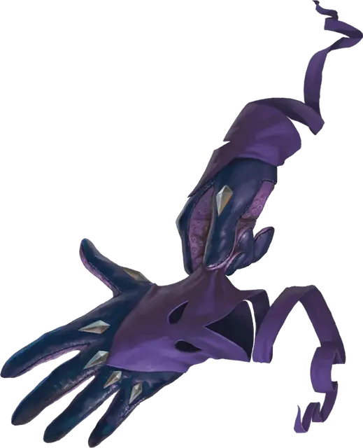

Перчатки воровства
Gloves of Thievery
Чудесный предмет, необычный

Рекомендованная стоимость 101-500 зм
Эти перчатки невидимы, пока вы носите их. Пока вы носите их, вы получаете бонус +5 к проверкам Ловкости (Ловкость рук) и проверкам Ловкости, совершённым для вскрывания замков.